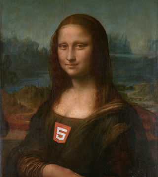

OL3
A unique mapping library

OL 3.0 has been released!
This talk:
present some of the techniques used in the library
« Draw early, Draw often »
So for good rendering quality:
- vectors redrawn at each frame
- while interacting and animating
- at 60 fps!
Performance challenge!
Now let's look at the techniques we use in the library…
#1 batching
Minimize data processing and manipulation:
- style calculations
- geometry simplifications
- R-tree lookups
- object creations
⇨ replay batch during animations/interactions
Let's look at Example #1 again.
#2 geometry simplification
- Douglas Peuker (lines)
- Quantization – to maintain topology (polygons)
⇨ also allows for better rendering qualtity
#3 over-simplification
Over-simplification and clipping for the parts that are outside the viewport.

#4 No intermediate canvas for vectors
Vector geometries are draw to the output canvas directly.
- avoid composing transparent pixels
- save memory
Consequence: vector layers are very cheap!
Feature Hit Detection
Hit Detection
Canvas doesn't natively support hit detection.
Technique used: redraw the entire "scene" in a 1x1 px canvas, and test if there is a color.
Advantages:
- simple and efficient
- pixel-perfect detection
- tolerance for line detection on touch devices
WebGL
WebGL
- WebGL is now everywhere…
- even in iOS! (iOS 8)
- allow to do thing otherwise not possible
OL3's WebGL renderer
Current status:
- support for tile and image layers only
- basic image effect support (hue, …)
- vector layers are not supported
Perspectives
Push WebGL renderer forward!
- Add vector support
- Tilted/perspective views